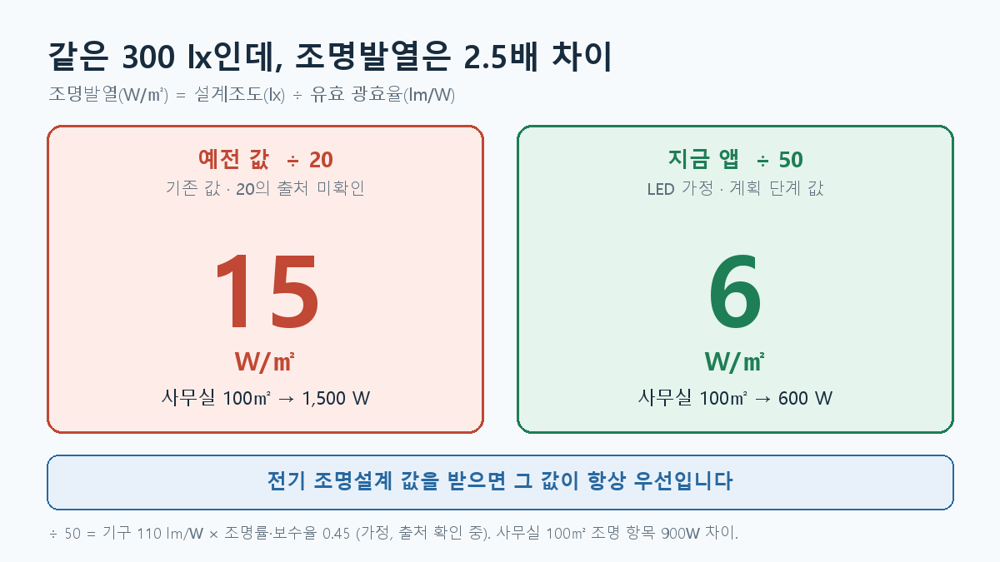

부하계산에서 조명발열은 흔히 W/㎡로 입력합니다. 그런데 프로젝트 초기에 전기 조명설계가 끝나지 않았다면 그 값을 받기 어렵습니다. 이때 실별 설계조도를 이용해 조명전력을 임시로 추정할 수 있습니다.
제가 만든 계산서에도 그런 추정값이 있었습니다. 사무실 설계조도 300lx에 조명발열 15W/㎡가 들어 있었습니다. 값을 나누어 보니 300 ÷ 20 = 15였습니다.
문제는 코드의 “LED 기준”이라는 설명만으로 20이라는 숫자의 근거를 확인할 수 없었다는 것입니다.
기준 상태: 실제 전기 조명설계의 전력밀도가 우선입니다. 아래의 ÷50은 전기 설계값을 받기 전 사용하는 가정값이며, 기구 효율과 보정계수의 출처를 추가 확인해야 합니다.
조도와 전력은 같은 값이 아닙니다
조도(lx)는 책상이나 바닥 같은 면에 도달하는 빛의 정도입니다. 조명전력밀도(W/㎡)는 그 빛을 만들기 위해 설치한 조명의 전력을 면적으로 나눈 값입니다.
같은 300lx를 만들더라도 조명기구의 성능, 배치, 실의 형태와 반사율, 사용에 따른 광속 감소를 어떻게 반영했는지에 따라 필요한 전력은 달라집니다.
따라서 “조도가 절반이면 조명전력도 반드시 절반”이라고 단정할 수 없습니다. 다만 다른 조건이 같다고 가정할 때, 조도가 낮으면 필요한 전력이 낮아지는 방향으로 계산할 수 있습니다.
전기 설계값이 없을 때의 환산
계획 단계에서는 다음 형태로 추정할 수 있습니다.
조명전력밀도(W/㎡) ≈ 설계조도(lx) ÷ 유효 광효율(lm/W)
여기서 유효 광효율은 조명기구 자체의 표시 효율만을 뜻하지 않습니다. 설치된 조명에서 나온 빛 중 실제 필요한 면에 도달하는 비율과 사용에 따른 감소까지 반영한 계산용 값입니다.
현재 앱의 ÷50은 다음 가정에서 나온 반올림값입니다.
조명기구 효율 110lm/W × 조명률·보수율을 묶은 계수 0.45 = 49.5lm/W ≈ 50lm/W
사무실 300lx라면 300 ÷ 50 = 6W/㎡입니다. 100㎡ 사무실의 조명전력 추정값은 600W가 됩니다.
기존 ÷20으로는 300 ÷ 20 = 15W/㎡, 즉 1,500W입니다. 이 예제의 조명 항목은 900W 차이가 납니다. 냉방부하의 다른 조건을 모두 같게 두면 냉방부하도 그만큼 달라집니다.

이 비교만으로 기존 조명이 실제로 구형 형광등이었다고 결론 내릴 수는 없습니다. 20의 출처가 확인되지 않았고, 50도 아직 계획 단계 가정값이라는 점이 중요합니다.
실제 조명설계값이 오면 교체합니다
설계 적용 순서는 간단합니다.
| 순서 | 적용값 | 계산서에 남길 내용 |
|---|---|---|
| 1 | 전기 분야가 제공한 조명전력밀도 또는 조명기구 배치·용량 | 자료명과 적용값 |
| 2 | 전기 자료가 없을 때 조도 기반 추정값 | 설계조도, 유효 광효율, 가정값 사용 사실 |
| 3 | 전기 설계 확정 후 재검토 | 추정값에서 확정값으로 바뀐 내역 |
조도 기반 추정은 전기 조명설계를 대신하는 확정값이 아닙니다. 조명기구가 정해지면 해당 기구와 배치에 따른 실제 전력으로 바꿉니다.
앱과 기준서가 달라진 부분도 있습니다
앱의 실 유형별 조명 계산은 ÷50으로 바뀌었지만, 검토 당시 다음 두 곳에는 옛 값이 남아 있었습니다.
- 기준서 설명에는 여전히
÷20이 적혀 있었습니다. - 앱에서 새 실을 처음 추가할 때 사무실 조명 기본값이 15W/㎡로 시작했습니다. 실 유형을 다시 고르면 6W/㎡가 적용됐습니다.
따라서 이 부분이 수정되기 전에는 새로 만든 실의 조명 입력값을 직접 확인해야 합니다. 기준서와 앱의 입력 화면이 같은 규칙을 가리키도록 맞추는 것도 남은 작업입니다.
설계자가 확인할 것
- 전기 조명설계에서 실제 조명전력 자료를 받을 수 있는지 확인합니다.
- 자료가 없다면 적용한 설계조도와 유효 광효율 가정을 기록합니다.
- 실 유형을 바꾸거나 새 실을 만들었을 때 입력값이 같은 규칙으로 생성되는지 확인합니다.
- 전기 설계값이 나오면 추정값을 교체하고 부하 결과의 변화를 확인합니다.
조명발열의 핵심은 6W/㎡라는 숫자를 외우는 것이 아닙니다. 그 값이 실제 조명설계에서 왔는지, 계획 단계의 추정인지 구분하는 것입니다.